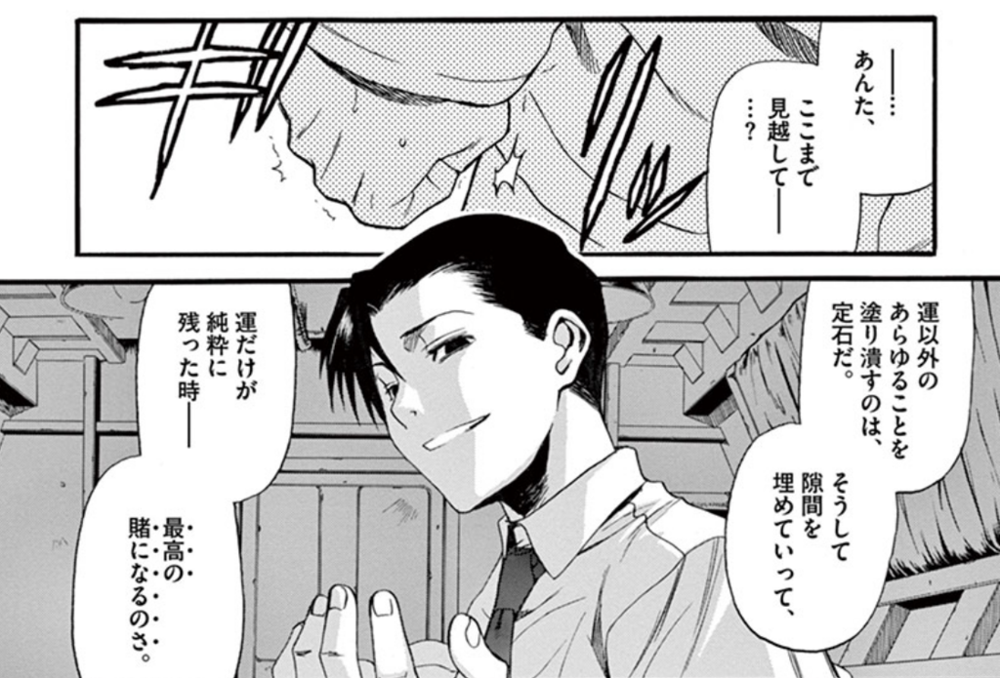

Yohei Nishimura
Create attractive services by new technology.
Interesting research field is AI/ML in Computer vision and recommendation algorithm.
Email: york.nishi [at] gmail.com
CV

It’s natural to do everything but luck. Then filling in the gaps, only luck remains, leading a great gamble.
--- BLACK LAGOON ---
Job History
Portfolio
- 2020 - present: Product Owner / Product manager at Mercari Inc., Tokyo
- Responsible for launching Mercari new business.
- 2017 - 2020: Chief Operation Officer at Michael Inc., Tokyo
- Responsible for products' management, design, and engineering on CARTUNE.
- Company management.
- Michael Inc. founded as a startup, bought out by Mercari Inc in Oct 2018.
- 2018 - present: Board of Directors at hitokara media Inc., Tokyo
- Join management meetings and direct essential projects in the company.
- hitokara media Inc growed up ten times between 5 years as a startup.
- 2020 - present: Advisor at toridori Inc., Tokyo
- Join management meetings in the company.
- 2016 - 2017: Project leader of MixChannel at Donuts Co Ltd., Tokyo
- Growth of MixChannel, short video and live platform
- Product management, new alliance building, and design
- Team management over 30 members
- 2013 - 2016: Management consultant at YCP Holdings Limited., Tokyo
- Create strategies for large IT companies and startups, executing marketing, sales, financial modeling.
- Board member for IT and F&B subsidiary companies.
- 2011 - 2013: Equity researcher at Barclays, Tokyo
- Research on financial companies.
- 2009 - 2011: Market researcher at Bank of Japan, Tokyo
- Research on Japanese and United states equity markets.
- 2007 - 2011: Worked at Ministry of Economy, Trade and Industry, Tokyo
- Create law, tax support for small- and mid-cap companies.
Research
Education
- 2017 - 2020: A senior student in Department of Information Science, Faculty of Science and Engineering, Teikyo University (GPA: 3.6)
- 2003 - 2007: Bachelar of Economics, The University of Tokyo
- Focus on baysian statistics, econometrics, numerical macro economics, and game theory.
Certificates
- TOEFL: 100/120, Aug 2020
- GRE: V: 151, Q: 167, AWA: 3.5, Sep 2020
Links
Facebook GitHub Linkedin